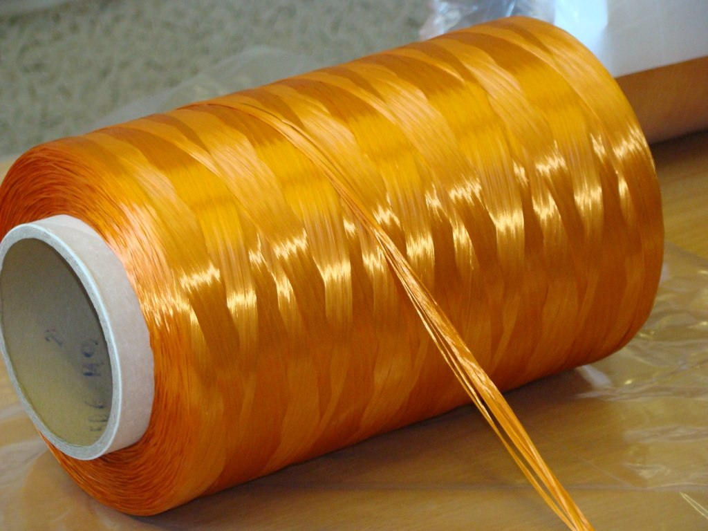
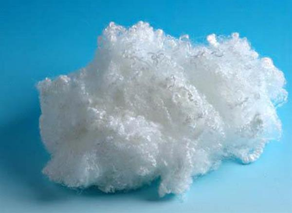

Filament Yarn
Filament yarn consists of filament fibres (very long continuous fibres) either twisted together or only grouped together. Thicker monofilaments are typically used for industrial purposes rather than fabric production or decoration. Silk is a natural filament, and synthetic filament yarns are used to produce silk-like effects.
Staple Fibre
Staple refers to fibre of discrete length and may be of any composition. A continuous fibre such as natural silk or synthetic is known as filament rather than staple fibre.
Fabrics
A textile[1] is a flexible material made by creating an interlocking network of yarns or threads, which are produced by spinning raw fibres (from either natural or synthetic sources) into long and twisted lengths.[2] Textiles are then formed by weaving, knitting, crocheting, knotting, tatting, felting, bonding or braiding these yarns together.